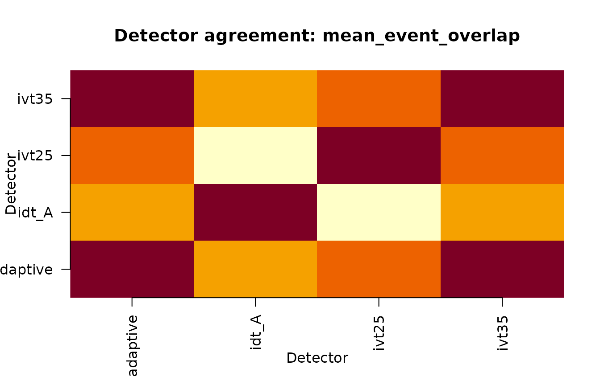
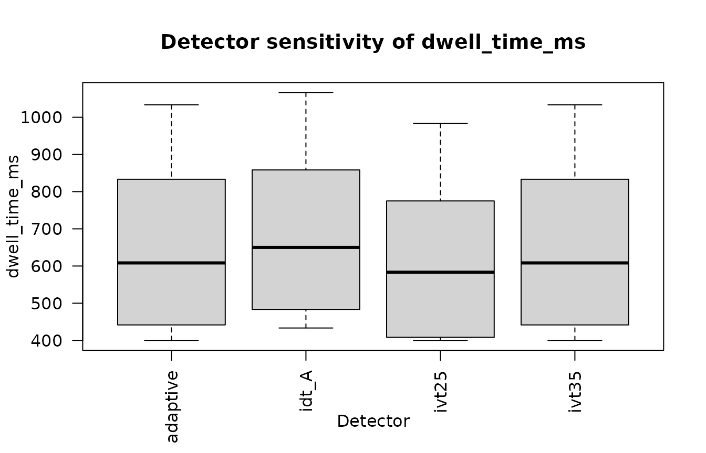

Event-Detector Multiverse and Inference Robustness
Source:vignettes/event-detector-multiverse.Rmd
event-detector-multiverse.RmdWhy event detection belongs in the analytical record
An event detector converts a continuous gaze stream into a discrete catalogue of fixations, saccades, pursuits, and related events. That conversion is upstream of AOI dwell, fixation count, time to first fixation (TTFF), revisits, transitions, scanpaths, and fixation-locked pupil summaries. A substantive result can therefore depend on the detector family or parameters even when the downstream model is unchanged.
The detector-multiverse workflow asks a focused question:
Would the substantive inference change under another defensible event-detection specification?
The workflow is:
raw gaze
-> detector specification
-> event catalogue
-> AOI assignment
-> derived features
-> identical statistical model
-> inference-stability reportThis is not a search for a detector that produces a preferred p-value.
When to use this workflow
Use detector sensitivity analysis when:
- fixation/saccade classification is upstream of the outcome used in the paper;
- more than one threshold or detector family is scientifically defensible;
- vendor events are being compared with research algorithms;
- a reviewer asks whether a gaze effect is detector-dependent;
- event fragmentation/merging could plausibly affect AOI metrics or scanpaths.
Do not construct arbitrary parameter grids and present them as universal recommendations. Thresholds depend on sampling rate, precision, task, display, head motion, pursuit content, preprocessing, and the scientific question.
Define detector specifications
The core does not silently choose thresholds.
ivt25 <- define_event_detector_spec(
"ivt25",
"ivt",
velocity_threshold = 25,
minimum_duration_ms = 60,
maximum_gap_ms = 75,
sampling_rate = 60,
coordinate_unit = "degrees"
)
ivt35 <- define_event_detector_spec(
"ivt35",
"ivt",
velocity_threshold = 35,
minimum_duration_ms = 60,
maximum_gap_ms = 75,
sampling_rate = 60,
coordinate_unit = "degrees"
)
idt_a <- define_event_detector_spec(
"idt_A",
"idt",
dispersion_threshold = 1.2,
minimum_duration_ms = 80,
sampling_rate = 60,
coordinate_unit = "degrees"
)
adaptive <- define_event_detector_spec(
"adaptive",
"adaptive_velocity",
minimum_duration_ms = 60,
maximum_gap_ms = 75,
sampling_rate = 60,
coordinate_unit = "degrees",
parameters = list(
noise_factor = 4,
minimum_velocity_threshold = 20
)
)
multiverse <- create_detector_multiverse(
list(ivt25, ivt35, idt_a, adaptive)
)
multiverse$manifest[, c(
"detector_id",
"algorithm",
"velocity_threshold",
"dispersion_threshold",
"minimum_duration_ms"
)]
#> detector_id algorithm velocity_threshold dispersion_threshold
#> 1 adaptive adaptive_velocity NA NA
#> 2 idt_A idt NA 1.2
#> 3 ivt25 ivt 25 NA
#> 4 ivt35 ivt 35 NA
#> minimum_duration_ms
#> 1 60
#> 2 80
#> 3 60
#> 4 60The built-in adaptive detector is explicitly a robust-MAD reference implementation. It is not labelled as REMoDNaV, Nyström-Holmqvist, Engbert-Kliegl, or another named external algorithm.
Synthetic 60 Hz worked example
The bundled generator is deliberately small, reproducible, and private-data free. It creates a known positive disclosure-dwell effect.
dat <- simulate_detector_multiverse_data(
n_participants = 4,
sampling_rate = 60,
seed = 20260918
)
detected <- run_detector_multiverse(
dat,
multiverse,
continue_on_error = TRUE
)
summarise_detector_events(detected)
#> detector_id number_of_events number_of_fixations number_of_saccades
#> 1 adaptive 35 35 0
#> 2 idt_A 26 26 0
#> 3 ivt25 40 40 0
#> 4 ivt35 35 35 0
#> mean_fixation_duration_ms median_fixation_duration_ms
#> 1 423.3333 400.0000
#> 2 598.7179 533.3333
#> 3 359.1667 316.6667
#> 4 423.3333 400.0000
#> total_fixation_duration_ms
#> 1 14816.67
#> 2 15566.67
#> 3 14366.67
#> 4 14816.67The same raw gaze is processed independently for every specification.
Compare event catalogues structurally
Different detectors do not necessarily produce the same number of
rows, so row-by-row comparison is inappropriate.
match_detected_events() performs deterministic one-to-one
temporal matching using event overlap and onset tolerance.
agreement <- estimate_detector_agreement(detected)
agreement[, c(
"detector_a",
"detector_b",
"matched_event_precision",
"matched_event_recall",
"f1",
"mean_event_overlap"
)]
#> detector_a detector_b matched_event_precision matched_event_recall f1
#> 1 adaptive idt_A 1.0000000 0.7428571 0.8524590
#> 2 adaptive ivt25 0.8750000 1.0000000 0.9333333
#> 3 adaptive ivt35 1.0000000 1.0000000 1.0000000
#> 4 idt_A ivt25 0.6500000 1.0000000 0.7878788
#> 5 idt_A ivt35 0.7428571 1.0000000 0.8524590
#> 6 ivt25 ivt35 1.0000000 0.8750000 0.9333333
#> mean_event_overlap
#> 1 0.8716631
#> 2 0.9244693
#> 3 1.0000000
#> 4 0.7744531
#> 5 0.8716631
#> 6 0.9244693Without an independently justified reference catalogue, these quantities describe agreement, not accuracy.
plot_detector_agreement(detected)
Pairwise temporal agreement among successful fixation catalogues.
Propagate detector choice into AOI features
AOI overlap defaults to "error". If an event belongs to
more than one AOI, the analyst must choose a rule explicitly rather than
receiving an undocumented first-match assignment.
features <- propagate_detector_to_aoi(
detected,
overlap = "error"
)
features <- propagate_detector_to_features(features)
head(features$features[, c(
"detector_id",
"participant_id",
"trial_id",
"condition_id",
"aoi_id",
"fixation_count",
"dwell_time_ms",
"ttff_ms",
"revisits"
)])
#> detector_id participant_id trial_id condition_id aoi_id fixation_count
#> 1 adaptive P001 R001_T1 control disclosure 1
#> 2 adaptive P001 R001_T1 control main_content 2
#> 3 adaptive P001 R001_T2 disclosure disclosure 1
#> 4 adaptive P001 R001_T2 disclosure main_content 3
#> 5 adaptive P002 R002_T1 control disclosure 1
#> 6 adaptive P002 R002_T1 control main_content 2
#> dwell_time_ms ttff_ms revisits
#> 1 400.0000 550.0000 0
#> 2 1450.0000 0.0000 1
#> 3 783.3333 650.0000 0
#> 4 1100.0000 0.0000 1
#> 5 416.6667 566.6667 0
#> 6 1416.6667 0.0000 1Zero-event trials are retained. If a trial contains valid gaze but no target fixation, count/dwell can legitimately be zero. If the trial contains no valid gaze, those quantities remain missing rather than being converted to zero.
plot_detector_feature_distributions(
features,
feature = "dwell_time_ms",
aoi_id = "disclosure"
)
Synthetic disclosure-AOI dwell across detector specifications.
Propagate into the same statistical model
The statistical engine is explicit. The example uses
stats::lm() through engine = "stats_lm"; mixed
models can use lme4_lmer, and specialist estimators can
enter through the documented callback contract.
model_spec <- list(
engine = "stats_lm",
formula = dwell_time_ms ~ condition_id + participant_id,
outcome = "dwell_time_ms",
aoi_id = "disclosure"
)
inference <- run_detector_inference_multiverse(
features,
model_spec,
minimum_valid_fraction = 0.5
)
condition_term <- grep(
"condition_id",
inference$coefficients$term,
value = TRUE
)[1]
stability <- assess_detector_inference_stability(
inference,
term = condition_term,
substantive_threshold = 100,
direction = "above"
)
stability
#> term specifications term_available_specifications
#> 1 condition_iddisclosure 4 4
#> model_failure_specifications converged_specifications convergence_rate
#> 1 0 4 1
#> median_estimate estimate_min estimate_max estimate_range same_sign_proportion
#> 1 416.6667 404.1667 420.8333 16.66667 1
#> ci_overlap ci_overlap_lower ci_overlap_upper substantive_conclusion_stability
#> 1 TRUE 214.9798 605.4131 1Formula models use na.fail. Missing predictors therefore
cause an explicit branch failure rather than an unnoticed reduction in
N. Non-converged branches are retained diagnostically and excluded from
coefficient-distribution summaries.
Model-input audit
Outcome and quality attrition are also explicit.
run_detector_inference_multiverse() returns
input_audit, one row per planned detector specification. It
records input_rows, aoi_selected_rows,
quality_excluded_rows, outcome_missing_rows,
model_rows_used, and branch status.
inference$input_audit[, c(
"detector_id",
"input_rows",
"aoi_selected_rows",
"quality_excluded_rows",
"outcome_missing_rows",
"model_rows_used",
"status"
)]
#> detector_id input_rows aoi_selected_rows quality_excluded_rows
#> 1 adaptive 16 8 0
#> 2 idt_A 16 8 0
#> 3 ivt25 16 8 0
#> 4 ivt35 16 8 0
#> outcome_missing_rows model_rows_used status
#> 1 0 8 modelled
#> 2 0 8 modelled
#> 3 0 8 modelled
#> 4 0 8 modelledQuality and non-finite-outcome exclusions also appear in
inference$warnings. The same counts are copied onto
coefficient rows when a model is fitted and onto failure rows when
fitting cannot proceed. Missing outcomes are never recoded as zero or
silently discarded.
Denominator discipline
The stability table uses the declared detector
multiverse as the denominator. specifications is
the number of planned detector specifications,
term_available_specifications counts branches that returned
the requested coefficient, and model_failure_specifications
counts recorded model-stage failures. Failed fits, missing requested
terms, and non-converged branches therefore reduce the reported
convergence rate instead of disappearing from the robustness
calculation. Custom model callbacks must return at most one row per
coefficient term within a detector branch.
plot_detector_coefficient_stability(
inference,
term = condition_term
)Synthetic condition coefficient and confidence interval across detector specifications.
REMoDNaV is an external bridge, not a reimplementation
When REMoDNaV is the intended detector, request it explicitly:
remodnav <- define_event_detector_spec(
"remodnav",
"remodnav",
minimum_duration_ms = 60,
sampling_rate = 60,
coordinate_unit = "degrees",
parameters = list(
noise_factor = 5
)
)eyeprocess calls the installed REMoDNaV command-line
implementation. If the executable is unavailable, that branch fails
explicitly and no internal approximation is substituted. Pixel data
require an explicit px2deg conversion factor; normalized
coordinates must be converted before the bridge is used.
What to report
At minimum, report:
- the primary detector and its rationale;
- every evaluated detector family and parameter specification;
- sampling rate and coordinate units;
- thresholds, minimum duration, gap/merge rules, smoothing/filtering, and external implementation versions;
- AOI definitions and the AOI-overlap rule;
- quality rules applied before modelling;
- successful, failed, and non-converged branches;
- event-count/duration differences and temporal agreement;
- sensitivity of the AOI features supporting the claim;
- coefficient distributions, intervals, sign stability, and any explicitly declared substantive threshold;
- source, preprocessing, detector, AOI, quality, model, and software provenance.
Do not summarize robustness by counting significant p-values.
Visual reporting companion
For a compact plot-first walkthrough, use
vignette("event-detector-multiverse-visual-reporting"). It
generates a CI-sized set of internal-detector diagnostics covering event
counts, temporal agreement, disclosure-AOI dwell, coefficient stability,
and model-input row accounting. The visual article uses only built-in
detectors so optional external backends do not determine whether the
page can build.
The figures should be read as a sequence: event representation → propagated measurement → downstream inference → row/failure accounting. No individual plot is a detector-validity test.
Generate a Markdown report
report <- report_detector_multiverse(
features,
inference = inference,
term = condition_term,
substantive_threshold = 100
)
cat(substr(report, 1, 800), "...")
#> # Event-detector multiverse report
#>
#> ## Scope
#>
#> This report evaluates whether events, AOI features, and statistical conclusions change across the supplied defensible detector specifications. The specification set is not evidence that omitted detector choices are valid or irrelevant.
#>
#> ## Detector specifications
#>
#> | detector_id | algorithm | velocity_threshold | dispersion_threshold | minimum_duration_ms | maximum_gap_ms | merge_rule | sampling_rate | smoothing | filter | coordinate_unit | implementation | implementation_version | detector_spec_hash |
#> | --- | --- | --- | --- | --- | --- | --- | --- | --- | --- | --- | --- | --- | --- |
#> | adaptive | adaptive_velocity | | | 60 | 75 | none | 60 | | | degrees | eyeprocess | | 9f23dbcd2c2acd6720f04aaeacb2a842 |
#> | idt_A | idt | | 1.2 | 80 | | ...Interpretation boundaries
Detector agreement does not establish event validity. Detector disagreement does not establish which detector is correct. A stable coefficient across a narrow multiverse does not imply stability to omitted preprocessing, AOI, quality, or model choices.
For broader workflow sensitivity, see
vignette("multiverse-sensitivity-and-decision-stability").
For the canonical event functions, see
?event_detector_multiverse.
Methodological context includes Dar, Wagner, and Hanke (2021) on REMoDNaV and recent event-detection evaluation work emphasizing signal/task dependence and event-level matching rather than naive row pairing.
R/Python contract parity
eyeprocess and eyeprocesspy use the same
detector-spec vocabulary, failure semantics, temporal-matching fixture,
propagated feature names, and tidy inference fields. The same JSON
contract fixture is exercised by both test suites.
The backend labels differ only where the host ecosystems differ:
| Scientific role | R | Python |
|---|---|---|
| ordinary linear model | stats_lm |
statsmodels_ols |
| mixed model | lme4_lmer |
statsmodels_mixedlm |
| specialist estimator | callback |
callback |
| REMoDNaV integration | installed REMoDNaV CLI | installed Python REMoDNaV package |
These are backend differences, not permission to alter the scientific model between languages. Numerical identity is not required where estimation engines differ; detector definitions, retained observations, model meaning, convergence status, provenance, and semantic output fields are expected to align.
Failure clinic
The companion event-detector-multiverse-visual-reporting
vignette provides a plot-first reporting workflow. The
event-detector-multiverse-failure-clinic vignette and
installed
examples/event-detector-multiverse-failure-clinic.R script
deliberately exercise detector failure, quality exclusion, outcome
missingness, and invalid duplicate-term callback output. Use them to
verify that failures remain visible rather than being repaired
silently.